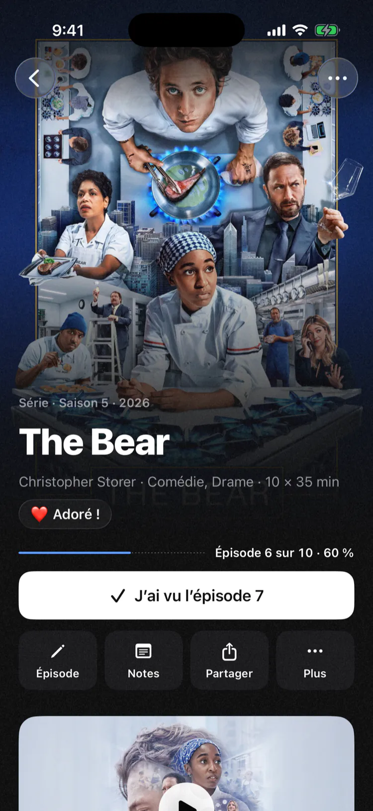
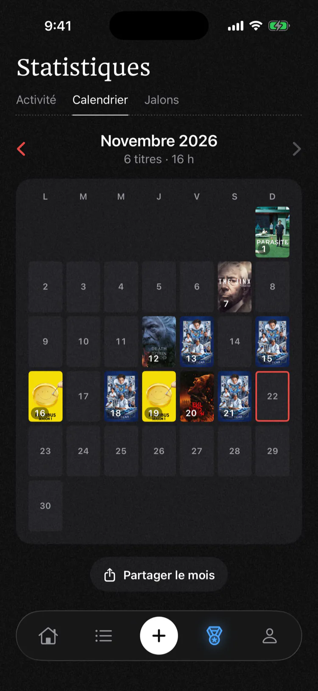
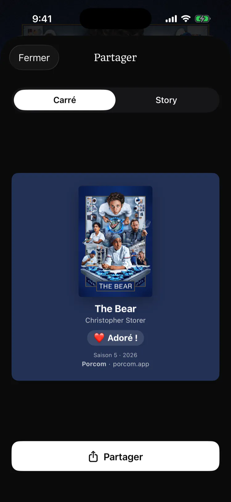
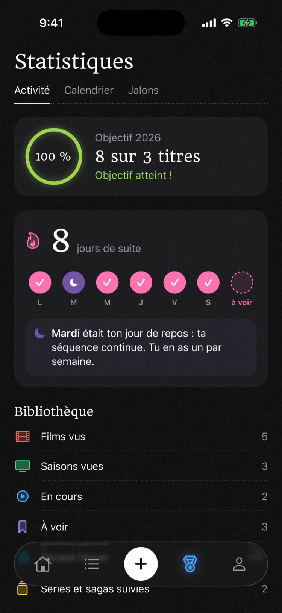

Un journal de films pour tout ce que tu vois
Dernière mise à jour : 21 novembre 2026
Porcom tient le journal des films que tu regardes : la date, ton verdict, tes notes et chaque revisionnement, sur ton iPhone. Gratuit, sans compte et sans pub.

Chaque film s’ouvre sur sa bande-annonce
Cherche un titre : l’affiche, le résumé, la distribution et la bande-annonce viennent de TMDB. Donne-lui ensuite un verdict, 👎 Bof, 👍 Aimé, ❤️ Adoré ! ou 🔥 Dévoré !, et note le scénario, le jeu, la réalisation, le visuel, la trame sonore et la fin si tu veux nuancer.
La date de chaque visionnement
Vu hier soir ? Marque-le comme vu et la soirée compte. Revois-le et Porcom enregistre un nouveau visionnement : tes revisionnements ont leur place dans ton calendrier.

Des jalons pour cinéphiles
Un film de trois heures, un programme double, un classique d’avant 1970, un film d’horreur le 31 octobre : des jalons à débloquer, douze niveaux et un défi chaque mois.

Partage ton verdict
Partage un film avec ton verdict en image, carrée pour une publication ou verticale pour une story.

Ton année en films
Tes heures d’écran et les titres vus, par plateforme et par genre. En fin d’année, ton année à l’écran : le mois le plus chargé, le film le plus long et le réalisateur de l’année.

Déjà sur Letterboxd ?
Porcom exporte tes films vus dans un fichier CSV au format d’importation de Letterboxd, avec la date, ton verdict et tes notes.

Gratuit et privé
Porcom fonctionne sans compte. Ton journal reste sur ton iPhone et dans ton iCloud privé, auquel nous n’avons pas accès.
Télécharge Porcom sur l’App Store : gratuit, sans compte, sans pub et sans abonnement.
Questions
Consulte les questions fréquentes ou va voir l’assistance.